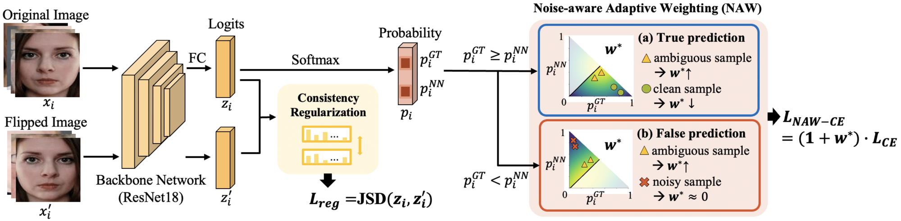
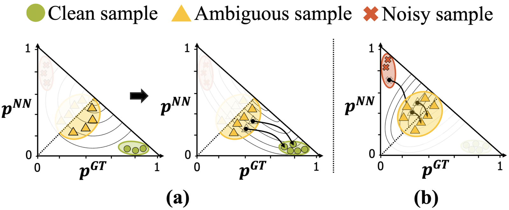
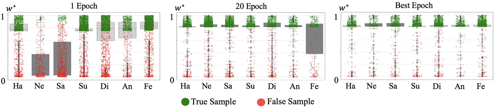
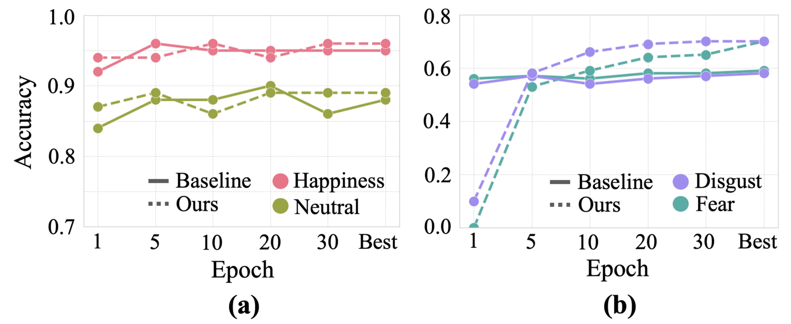
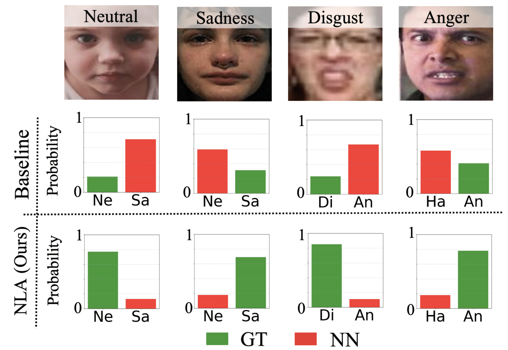

NLA re-weights every training sample by how ambiguous it looks, so one ResNet-18 handles label noise and class imbalance at the same time.
Facial expression recognition (FER) remains a challenging task due to label ambiguity caused by the subjective nature of facial expressions and noisy samples. Additionally, class imbalance, which is common in real-world datasets, further complicates FER. Although many studies have shown impressive improvements, they typically address only one of these issues, leading to suboptimal results. To tackle both challenges simultaneously, we propose a novel framework called Navigating Label Ambiguity (NLA), which is robust under real-world conditions. The motivation behind NLA is that dynamically estimating and emphasizing ambiguous samples at each iteration helps mitigate noise and class imbalance by reducing the model's bias toward majority classes. To achieve this, NLA consists of two main components: Noise-aware Adaptive Weighting (NAW) and consistency regularization. Specifically, NAW adaptively assigns higher importance to ambiguous samples and lower importance to noisy ones, based on the correlation between the intermediate prediction scores for the ground truth and the nearest negative. Moreover, we incorporate a regularization term to ensure consistent latent distributions. Consequently, NLA enables the model to progressively focus on more challenging ambiguous samples, which primarily belong to the minority class, in the later stages of training. Extensive experiments demonstrate that NLA outperforms existing methods in both overall and mean accuracy, confirming its robustness against noise and class imbalance.
Every frame below was classified by the released NLA checkpoint (ResNet-18, trained on RAF-DB). Faces are found with YuNet, aligned on five landmarks, and the class probabilities are smoothed over time. The panel plots the top prediction against its runner-up, the same two-score view NLA uses during training.
NLA trains a single backbone with a re-weighted cross-entropy and a consistency term between an image and its horizontal flip.

The GT score and the nearest-negative score place every sample as clean, ambiguous, or noisy, without extra networks or clean subsets.
Separate kernels for true and false predictions give ambiguous samples the largest weight and suppress likely-noisy ones. A covariance scheduler reshapes the kernel as training goes on.
Jensen–Shannon divergence between an image and its flip keeps the per-sample scores, and therefore the weights, stable across iterations.

All methods use a ResNet-18 pre-trained on MS-Celeb-1M. Numbers are from the paper.
| RAF-DB | Venue | Overall | Mean | Happiness | Neutral | Sadness | Surprise | Disgust | Anger | Fear |
|---|---|---|---|---|---|---|---|---|---|---|
| Baseline | – | 87.42 | 78.53 | 95.44 | 88.53 | 85.56 | 83.59 | 58.75 | 78.40 | 59.46 |
| CB | CVPR'19 | 88.04 | 79.26 | 95.11 | 90.74 | 84.73 | 86.93 | 64.38 | 73.46 | 59.46 |
| BBN | CVPR'20 | 87.39 | 78.19 | 94.59 | 91.62 | 84.94 | 84.80 | 61.88 | 77.78 | 52.70 |
| RUL | NeurIPS'21 | 88.66 | 81.66 | 95.78 | 87.06 | 86.19 | 89.36 | 65.00 | 83.33 | 64.86 |
| EAC | ECCV'22 | 89.05 | 81.09 | 95.27 | 88.97 | 90.17 | 87.84 | 61.25 | 83.33 | 60.81 |
| MEK | NeurIPS'23 | 89.77 | 82.44 | 96.37 | 89.56 | 89.33 | 87.84 | 66.89 | 80.86 | 66.22 |
| NLA (ours) | AAAI'25 | 89.93 | 83.87 | 95.70 | 88.97 | 90.38 | 87.23 | 70.00 | 84.57 | 70.27 |
| Noise | Method | RAF-DB | AffectNet | FERPlus |
|---|---|---|---|---|
| 10% | LA-Net | 88.75 | 62.85 | 88.02 |
| 10% | NLA (ours) | 88.83 | 63.52 | 88.20 |
| 20% | LA-Net | 87.12 | 61.72 | 86.85 |
| 20% | NLA (ours) | 87.60 | 63.25 | 87.64 |
| 30% | LA-Net | 85.33 | 60.82 | 86.01 |
| 30% | NLA (ours) | 86.71 | 62.48 | 86.97 |
| Imbalance factor (RAF-DB) | Method | Overall | Mean |
|---|---|---|---|
| 50 | MEK | 87.65 | 77.11 |
| 50 | NLA (ours) | 87.97 | 78.05 |
| 100 | MEK | 86.47 | 73.06 |
| 100 | NLA (ours) | 87.98 | 73.34 |
| 150 | MEK | 85.20 | 70.33 |
| 150 | NLA (ours) | 86.34 | 70.49 |
NLA rows are the mean over five random seeds. Full tables, including SCN, RUL, EAC, BBN and the baseline, are in the paper.
Early in training the majority classes get the highest weights. As training proceeds, NAW raises the weights of ambiguous minority-class samples while keeping the majority classes, and minority-class accuracy keeps rising after the baseline saturates.



NLA is also the image backbone of V-NAW, which extends noise-aware adaptive weighting to video clips and placed 5th in the expression recognition track of the 8th ABAW Challenge at CVPR 2025.
@inproceedings{lee2025navigating,
title = {Navigating Label Ambiguity for Facial Expression Recognition in the Wild},
author = {Lee, JunGyu and Choi, Yeji and Kim, Haksub and Kim, Ig-Jae and Nam, Gi Pyo},
booktitle = {Proceedings of the AAAI Conference on Artificial Intelligence},
volume = {39},
number = {4},
pages = {4517--4525},
year = {2025},
doi = {10.1609/aaai.v39i4.32476}
}